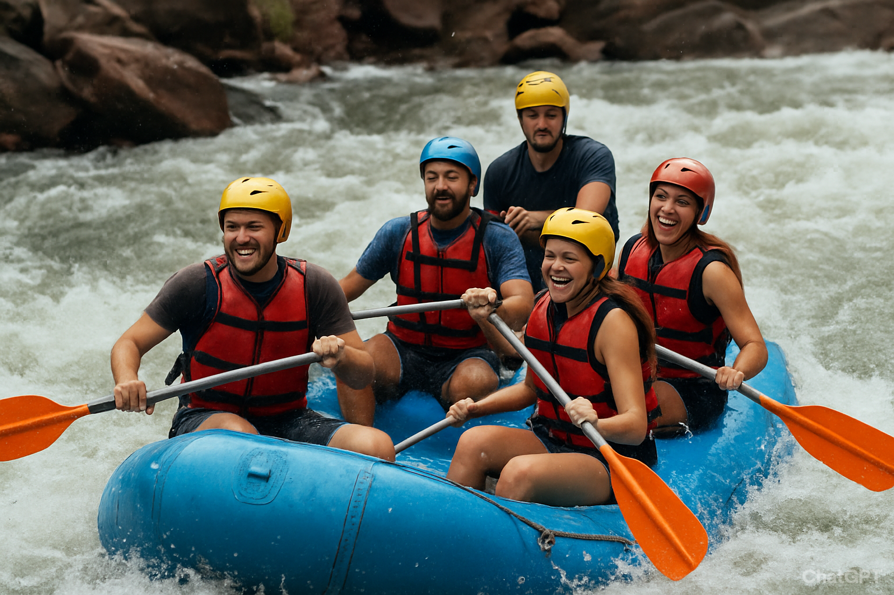
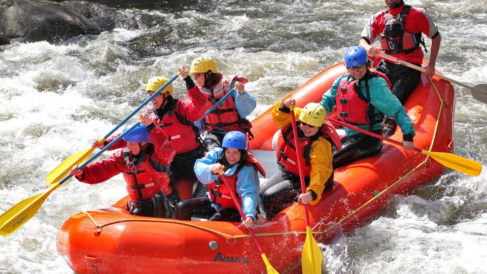

Ezekiel Edem Rafting Company
Welcome to Ezekiel Edem Rafting Company! We specialize in providing thrilling adventures along some of the most exhilarating rivers in Nigeria and beyond. Every splash brings a rush of excitement and every bend reveals breathtaking scenery, from lush forests to rugged cliffs. Our team of trained and experienced guides is dedicated to ensuring your safety, comfort, and enjoyment from start to finish. Whether you are a first-time rafter looking for a fun and safe introduction, or an experienced adventurer seeking the ultimate challenge, we have the perfect trip for you. Beyond the rapids, you’ll discover unique opportunities to connect with nature, bond with friends and family, and create unforgettable memories that will last a lifetime. At Ezekiel Edem Rafting Company, adventure isn’t just what we do — it’s who we are. Come join us and experience the river like never before!
History
Our company began in 2025 with a bold vision and a passion for adventure. What started as a small group of dedicated rafting enthusiasts has quickly grown into a trusted adventure company, creating unforgettable experiences for explorers and thrill-seekers from all over the world. Over the years, we have built a reputation for excellence, safety, and fun, guiding countless adventurers through some of the most breathtaking rivers and landscapes Nigeria has to offer. With expert guides, top-quality equipment, and a commitment to outstanding service, we strive to share the joy of rafting with people of all ages and backgrounds. Our mission is not just to provide an adrenaline rush but to foster a deep appreciation for nature’s beauty and the spirit of teamwork and resilience that rafting teaches. Join us on this journey and become part of the Ezekiel Edem Rafting family!